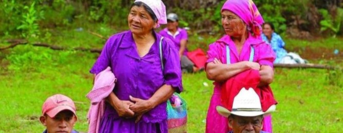
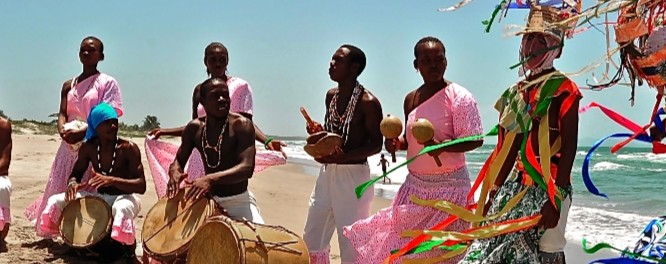
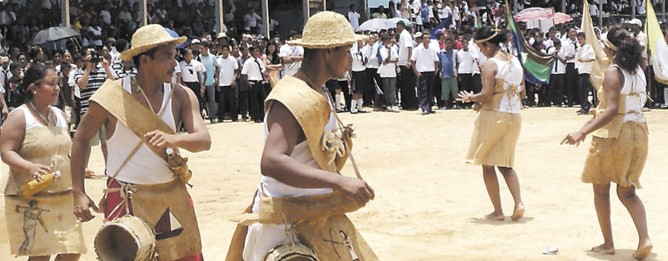
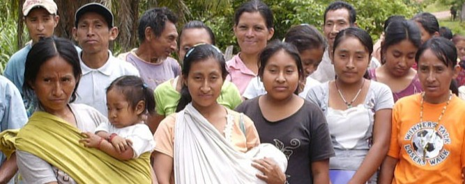
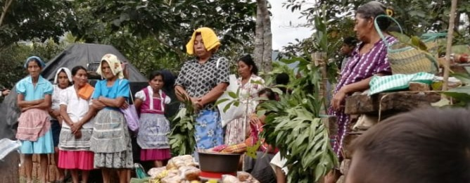
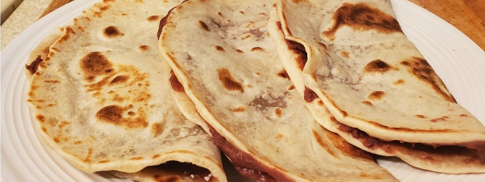
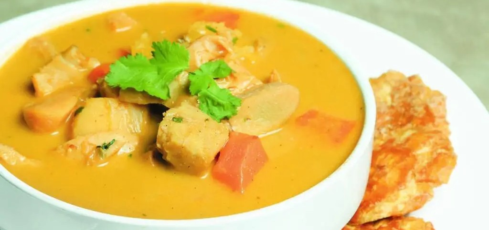
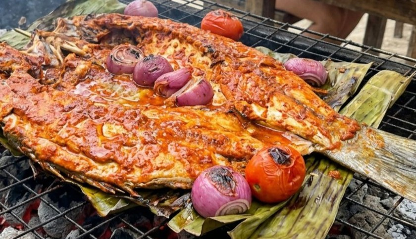
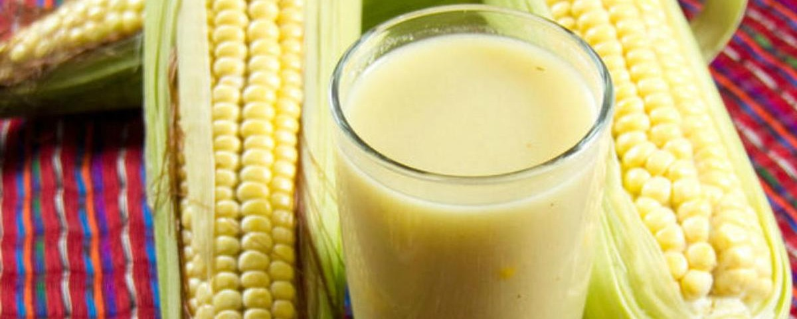

Lempira
Cacique lenca que encabezó la resistencia contra la conquista española en el siglo XVI. Su nombre designa la moneda nacional y un departamento del occidente del país.
La identidad hondureña nace de la memoria de sus próceres, de la sabiduría de sus pueblos originarios y afrodescendientes, y de una mesa que mezcla maíz, mar y café.
Cada octubre, Honduras recuerda al general Francisco Morazán Quesada, nacido en Tegucigalpa, estadista liberal y símbolo del sueño de una Centroamérica unida.
Morazán sostuvo que las repúblicas del istmo, nacidas de la independencia de 1821, serían más fuertes juntas que separadas. Desde la jefatura de Estado de Honduras y luego desde la presidencia de la República Federal de Centroamérica impulsó reformas liberales: educación, libertad de pensamiento, separación entre Iglesia y Estado y organización republicana. Su proyecto federal no sobrevivió a las rivalidades de su época, pero su ideal sigue inspirando la integración regional.
Visitar la casa natal, las plazas y los museos que honran a Morazán es una forma de conocer cómo Honduras imaginó su futuro compartido.
Cacique lenca que encabezó la resistencia contra la conquista española en el siglo XVI. Su nombre designa la moneda nacional y un departamento del occidente del país.
Sabio y jurista nacido en Choluteca, redactor del Acta de Independencia de Centroamérica de 1821 y defensor de la educación y la ciencia.
Primer jefe de Estado de Honduras dentro de la federación centroamericana, impulsor de la organización institucional del nuevo Estado.
General morazanista que defendió el ideal unionista y gobernó Honduras a mediados del siglo XIX.
Sacerdote, poeta y educador conocido como «Padre Reyes». Impulsó la enseñanza superior en el país, antecedente de la actual Universidad Nacional Autónoma de Honduras.
Honduras es un país pluricultural. Estos pueblos mantienen su lengua, sus tradiciones y su relación con la tierra y el mar.

Pueblo más numeroso del occidente y centro-sur del país (Lempira, Intibucá, La Paz). Conocidos por su cerámica de formas y colores tradicionales y por su cosmovisión ligada a la tierra.

Pueblo afrodescendiente del litoral Caribe, de herencia africana e indígena. Su lengua, danza y música fueron reconocidas por la UNESCO como patrimonio oral e intangible de la humanidad.

Habitan La Mosquitia, en el nororiente del país, a orillas de ríos y lagunas. Su vida gira en torno a la pesca, la agricultura y la navegación en cayuco.

Pueblo de las montañas de Yoro y Francisco Morazán, también llamado xicaque. Mantiene su lengua y sus formas comunitarias de organización.

Descendientes de los mayas, viven en el occidente del país, cerca de Copán y Ocotepeque. Conservan saberes agrícolas y tradiciones heredadas de la civilización maya.
Honduras también reconoce a los pueblos pech y tawahka, y a la comunidad afrohondureña de habla inglesa de las Islas de la Bahía.
Del puesto callejero al fogón garífuna, estos sabores resumen la mesa hondureña.

Tortilla de harina de trigo doblada y rellena de frijoles refritos, queso duro y mantequilla (crema). Existen versiones «con todo», con huevo, aguacate o carne.

Plato emblemático del Caribe hondureño: caracol marino, leche de coco, yuca, plátano y especias. Se disfruta caliente, frente al mar.

Pescado adobado con jugo de naranja agria y especias, asado o frito, que se sirve con tajadas de plátano y casabe en las comunidades garífunas.

caliente y cremosa de maíz tierno, leche, canela y azúcar, común en las mañanas frescas y en las ferias.